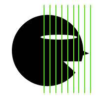
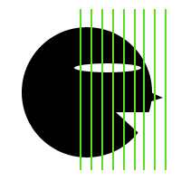
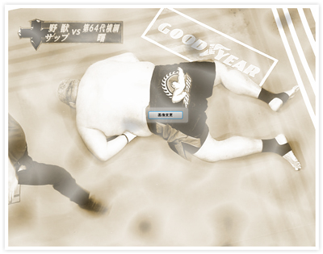
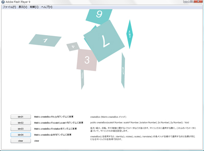
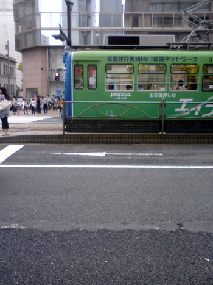

Flash Hacks―プロが教えるテクニック&ツール100選
にて面白いHackがあったので試してみた。
ボブサップが！！
下図のようにマスクにて分割しているだけです。

{kind=link}
スライダーの値を1にすると、
どういう仕組みかすぐ分かると思います。
2008年05月27日
Flash Hacks―プロが教えるテクニック&ツール100選
にて面白いHackがあったので試してみた。
ボブサップが！！
下図のようにマスクにて分割しているだけです。

スライダーの値を1にすると、
どういう仕組みかすぐ分かると思います。
2008年05月21日
自分メモ
alphaプロパティは内部的に0～255に変換しているため、
0～100指定では誤差が出るらしい。(as2)
に対する対応策メモ
//デフォルトのalphaプロパティthis._alpha = 20;
trace(this._alpha);this._alpha = 25;
trace(this._alpha);
getAlpha = function() {
return this.alphaInternal;
};
setAlpha = function (alphaIn) {
this._alpha = alphaIn;
this.alphaInternal = alphaIn;
}
initAlpha = function () {
return 100;
}//アンダースコアなしのalphaプロパティ追加
MovieClip.prototype.addProperty("alpha",getAlpha,setAlpha);
MovieClip.prototype.alphaInternal = initAlpha();this.alpha = 20;
trace(this.alpha);this.alpha = 25;
trace(this.alpha);
■trace結果
19.921875
25
20
25
2008年05月18日
地味に基本情報処理試験を受けていたんですが、
結果が出たようです。
午前 595点
午後 695点
合格ライン 両方600点以上。
不合格！！
あと１問まぐれで正解していれば・・・・
2008年05月14日
※ちょっと重いかもです。

BitmapDataのperlinNoiseを使ってモヤモヤを動かしてみた。
写真の切り替えは、BitmapDataのmergeを使ったが、
見た目はフェードイン・フェードアウトとほぼ同じみたい。
perlinNoiseと、blendModeやmaskを組み合わせると
面白い効果が狙えそうな気がするが、
結構ややこしい。。。
参考にさせて頂いたページ
http://d.hatena.ne.jp/kkanda/20080224/p1
http://casualplay.net/blog/2005/11/post_3.html
http://casualplay.net/blog/2006/03/_thresholdperlinnoise.html
2008年05月09日
Matrixで何かを作ってみる。

注）酔うかも知れません。
adobeのドキュメントを読んでも理解できません。。。
そんななか、Matrix.createBox メソッドというのが用意されていて、
これを使うと結構分かりやすい。
2008年05月08日
photoshopでの作り方は↓こちら
http://www.n-sane.net/interfaces-layouts/glowing-glass-buttons/index.html
そして作ってみたswfファイルが↓こちら
swfファイル
それなりに近い形まで出来たが、
文字の反射がちょっと難しくて出来なかったです。。
Bitmapのdrawや、matrixらへんを使ってやろうと
試みたのですが、知識不足と理解不足で断念。。
特にmatrixはマジで理解できない＞＜
ちなみに汚いソースなどは↓こちら
source
2008年05月05日
前の会社の先輩の結婚式 in 博多
・披露宴でのコース料理
・博多とんこつラーメン
大学の知人を訪れ路面電車 in 広島

・あなご丼
・もみじ饅頭
・焼きがき
・広島お好み焼き
食った食った。
ここ半年で、7キロ太ったと思ってたのですが、
実際は、10キロでした！
めたぼめたぼ～
さて仕事に切り替えなければ！！